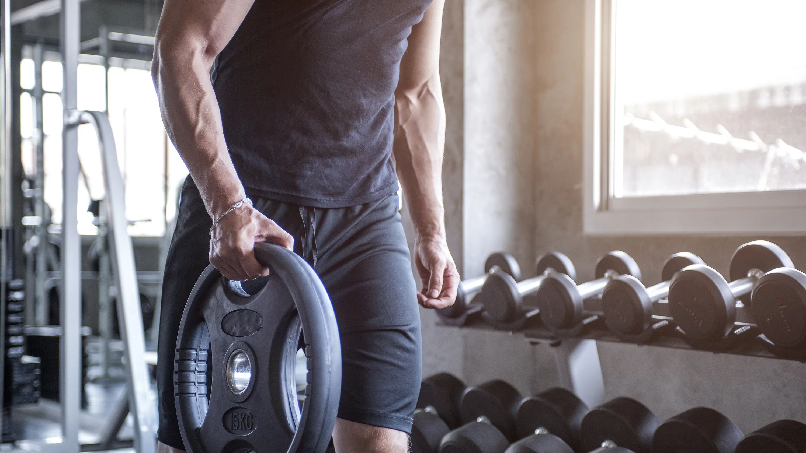
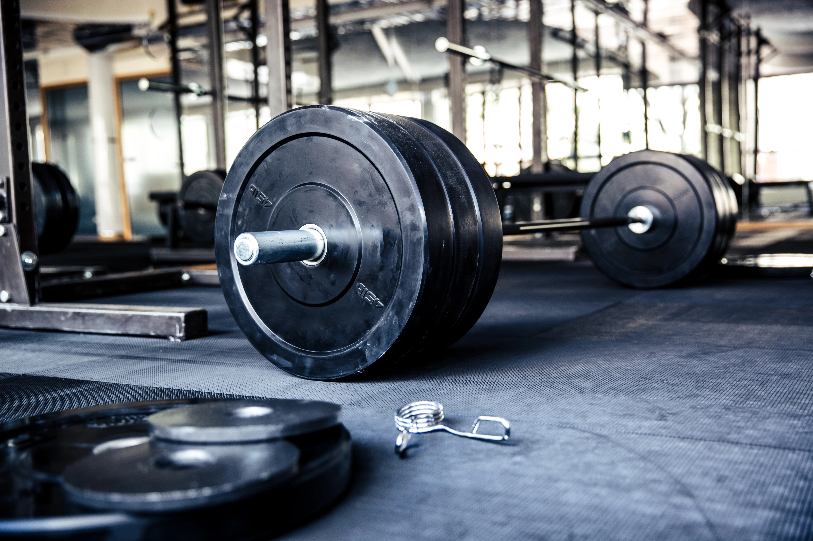

Informations sur l’utilisation des dispositifs sportifs
Poids et haltères
Les poids et haltères doivent être manipulés avec précaution pour éviter les blessures.
Voici quelques conseils à suivre :
- Assurez-vous de toujours avoir un observateur lorsque vous soulevez des poids lourds.
- Commencez par des poids plus légers pour vous échauffer et augmentez progressivement la charge.
- Utilisez une technique correcte de levage de poids pour éviter les tensions musculaires et les blessures articulaires.
- Ne forcez pas et écoutez votre corps. Arrêtez immédiatement si vous ressentez une douleur ou une gêne.
Barres et barbell
Les barres et barbell doivent être rangés après utilisation. Utilisez des colliers de serrage pour sécuriser les poids sur les barres. Voici ce que vous devez faire :
- Utilisez des colliers de serrage pour sécuriser les poids sur les barres et éviter qu'ils ne glissent pendant l'exercice
- Après utilisation, replacez les barres et barbells dans leur emplacement désigné
- Ne laissez pas les poids dispersés sur le sol pour éviter les accidents et les chutes
Appareils cardio
Les appareils cardio, tels que les tapis de course et les vélos elliptiques, nécessitent également un entretien régulier pour assurer leur bon fonctionnement et la sécurité des utilisateurs :
- Nettoyez les appareils cardio après chaque utilisation avec un désinfectant pour éliminer la sueur et les bactéries.
- Respectez le temps limite d'utilisation, en particulier pendant les périodes de forte affluence, pour permettre à d'autres utilisateurs d'avoir accès aux équipements.
- Signalez tout dysfonctionnement ou problème d'entretien à un membre du personnel afin qu'il puisse être résolu rapidement.